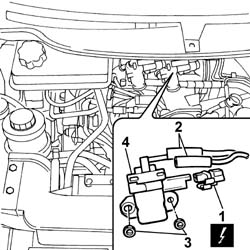

1064B38 WASTE GATE SUPERCHARGING PRESSURE ADJUSTMENT SOLENOID VALVE - R.R.
- Path
- Procedures > 10 ENGINE > 1064 ENGINE SUPERCHARGING SYSTEM > 1064B CONTROL/SAFETY DEVICES > 1064B38 WASTE GATE SUPERCHARGING PRESSURE ADJUSTMENT SOLENOID VALVE - R.R.
- Kind
- repair procedure (removal / refitting; the operation number is the code)
- Applies to
- engines: 2.0 16V JTD, 2.2 16V JTD; all production periods
- Interactive page
- https://sloeber94.github.io/elrnDB-fUlss/en/#/179007066
Applies to: engines: 2.0 16V JTD, 2.2 16V JTD; all production periods
 Removing
Removing
 Refitting
Refitting1. Disconnect the electrical connection.
2. Release the vacuum pipes.
3. Undo the retaining nuts.
4. Release and remove the solenoid valve.

Applies to: engines: 2.0 16V JTD, 2.2 16V JTD; all production periods
Refitting
Removing- Place the solenoid valve in position and tighten the fixing nuts.
- Connect the vacuum pipes and the electrical connection.